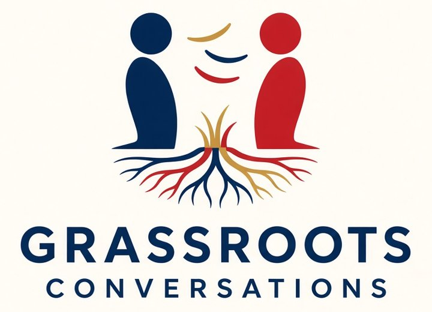

Return to the original social media
Neighbors talking to neighbors.
This is how we talk with neighbors: listen first, talk from the heart, and keep it to what’s affecting their family. One person at a time.
Start with the Conversation CardWhat this is
Grassroots Conversations equips volunteers with short, usable tools for real conversations. The work supports the conservative movement and local GOP organization for stronger precinct coverage, registration capacity, and neighbors covering neighbors.
We are the they.
Listen First
Start with what’s affecting their family — costs, safety, water, schools — not the drama.
Match the Ask
Different rooms, different depth. A club room can go deeper. On a porch, keep it short, local, and practical.
One Next Step
Close with one practical next step: one neighbor, one block, or one registration check.